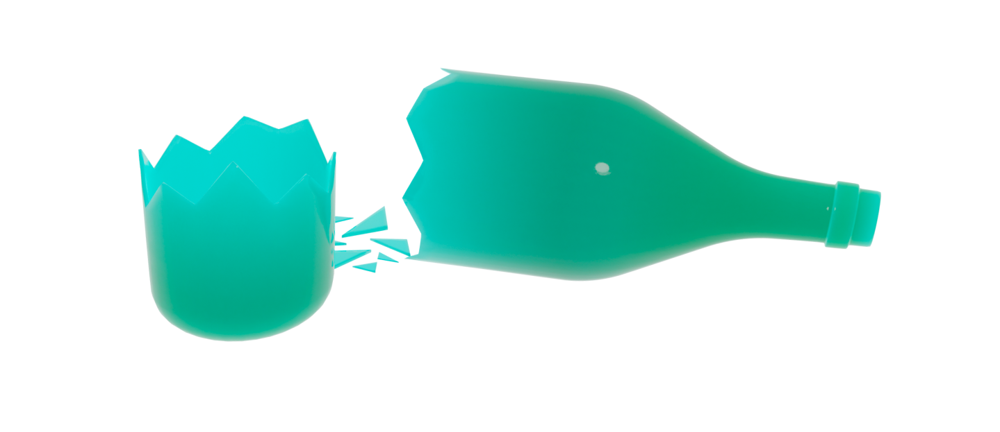

Выбросим
предметы
из стекла

Важно!
*Стекло является аморфным твердым материалом, не имеющим кристаллической структуры.
Стекло
Стекло — это материал, который уже долгое время используется в быту и производстве. Он является универсальным и долговечным, но также имеет некоторые негативные свойства.
Негативные свойства
Стекло не является биоразлагаемым материалом и может пролежать на свалке сотни лет, загрязняя окружающую среду. Кроме того, его производство требует больших затрат энергии и ресурсов.
Что с ними делать?
Однако стекло может быть переработано и использовано вновь, что позволяет уменьшить количество отходов и экономить ресурсы. Стеклянные бутылки и банки могут быть утилизированы через переработку, а стекло также можно использовать для создания дорожного покрытия, изготовления новых стеклянных изделий и строительных материалов.
Плюсы использования стекла
Кроме того, использование стеклянных изделий, таких как бутылки и банки, может помочь снизить количество пластиковых отходов, так как они могут быть многократно использованы. Поэтому, если мы будем бережно относиться к стеклу и утилизировать его правильно, мы сможем снизить негативное влияние на окружающую среду и экономить ресурсы.